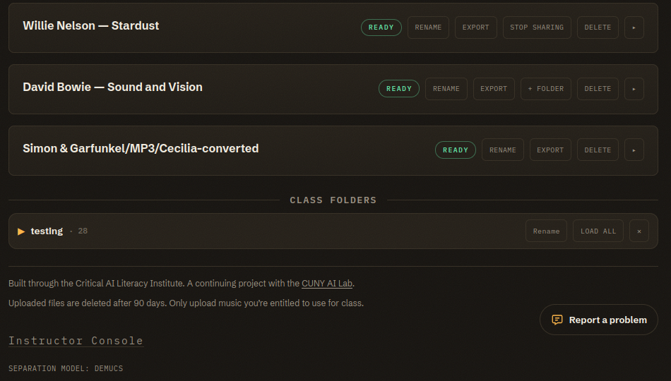

Export & Sharing
Download stems to work with them elsewhere, create an audio-only public link, or share a folder with members of a course.
Downloads
Press Export on a rack entry to download its stems as MP3 files. To keep just one stem, use the download arrow at the end of that stem's row. The app adds no watermark or course metadata. Use the downloaded recording within the terms of its license.
Public Links
Copy link on a finished split creates a public listening page. Anyone with the link can play the stems, change the mix, seek through the recording, and download the audio without signing in. Stop sharing revokes the link immediately. Files that someone already downloaded remain with that person.
The public page carries audio only. It excludes notes, custom labels, Listening Guy content, the original upload, and your identity. The link expires when the split reaches the end of its 90-day lifetime.
Folders
Share with on the Splitter assigns new work to Personal or a course. The course acknowledgment lets instructors review that new work and its Listening Guy conversations. Instructors grant classmates access through a folder's sharing setting.
Use a folder when a class needs to hear or annotate a group of course splits. Instructors create the folder in the Class Workspace, then add course recordings with + Folder in the rack. A folder starts with Instructors only access. To share it with current class members, choose Class: listen and read notes or Class: listen and add notes and press Save sharing. Original uploads and Listening Guy conversations stay outside the shared folder view.

Course Record
Instructors can open Course record in the Class Workspace to review assigned splits and usage within the retention window. The view supports classroom review and covers the work the app still retains.